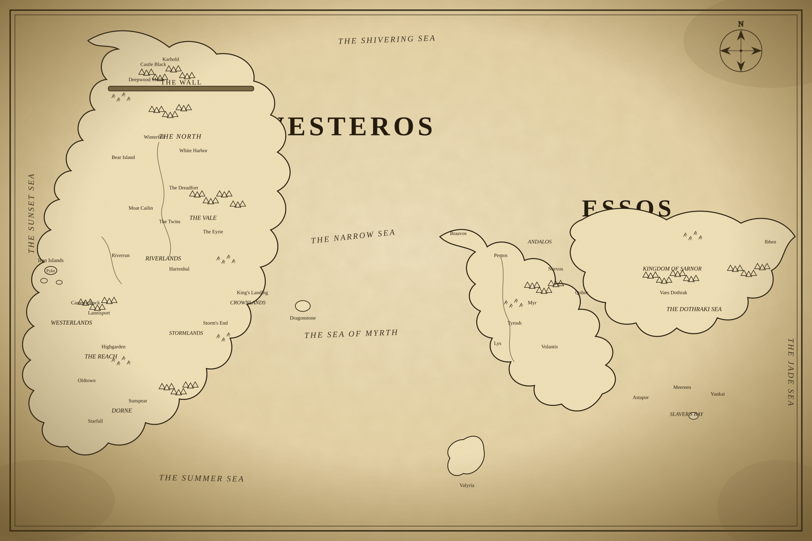

Ancient archive · Legend and lore
The History of Westeros
Enter the chronicles of kings, dragons, and the iron throne. Follow the age of heroes, the reign of fire, and the wars that shaped the realm.
Current Chronicle
- Age of Heroes
- Conquest of the Seven Kingdoms
- Rise of the Dragons
Interactive experience
Interactive Map of Westeros & Essos
Click each kingdom, city, and landmark to read its story — and hear the echoes of battle.

Chronicles
Historical Timeline
Drag the slider through the ages — houses rise, dragons fall, and the realm transforms.
Noble bloodlines
Great Houses
Discover the realm’s great houses, their seats, allegiances, and legendary sigils.
Living legends
Characters
Meet heroes, schemers, and icons from across Westeros and beyond.
Fire and blood
Dragons
Explore the dragons of House Targaryen and the ancient wyrms of legend.
War and conquest
Battles
Review the major conflicts that decided the fate of kingdoms and claims.
Stone and steel
Castles
Visit the strongholds, palaces, and seats of power that define Westeros.
Seek the realm
Search the Archive
Search for characters, houses, dragons, battles, castles, and cities.